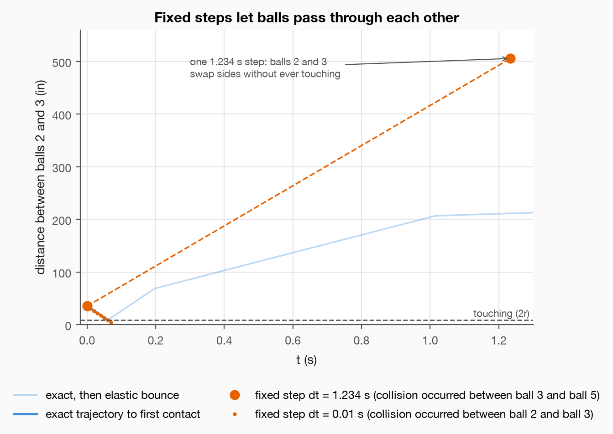
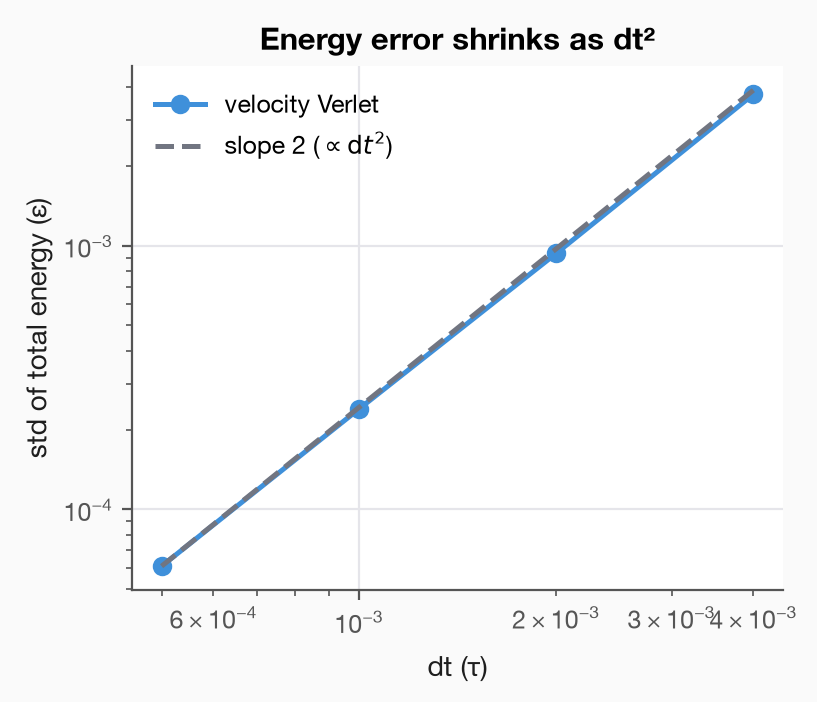
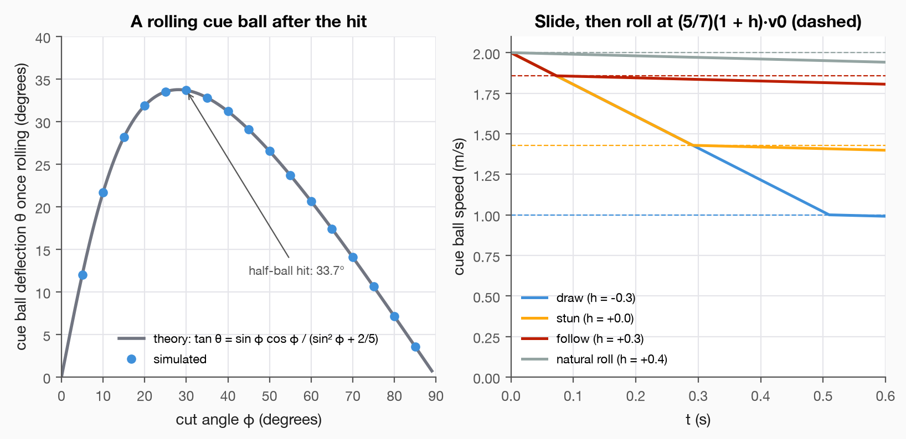
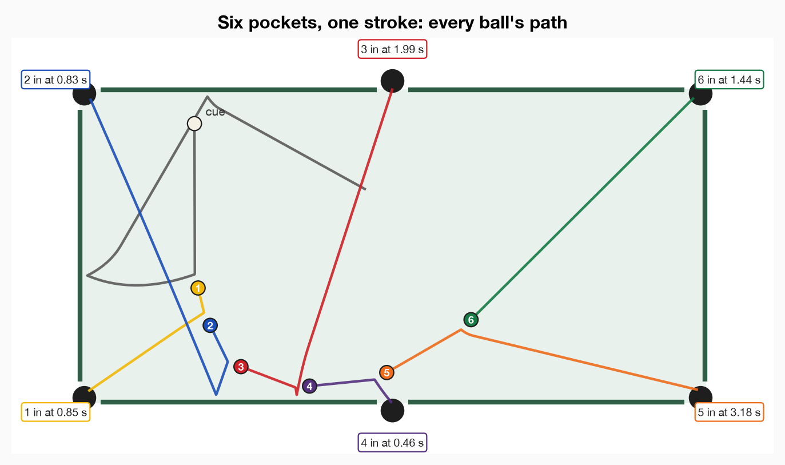
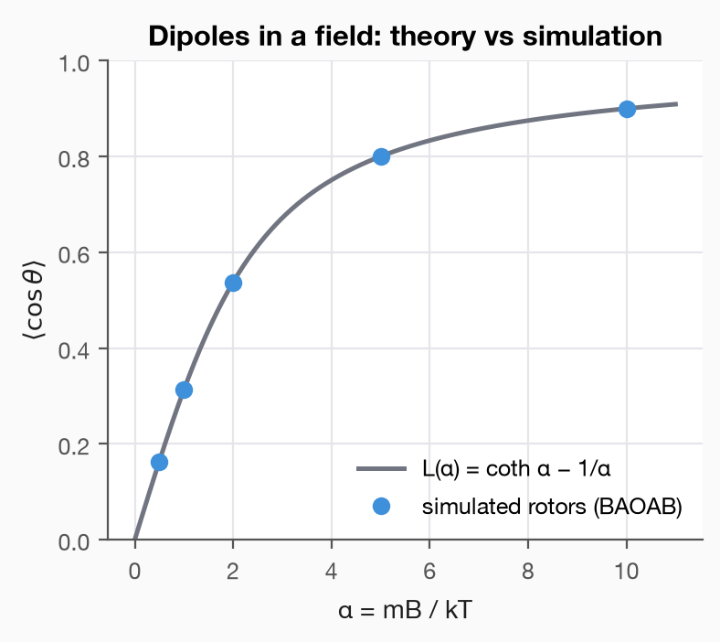
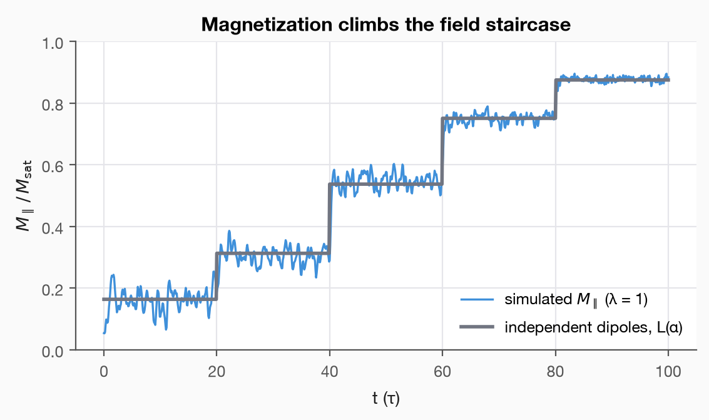
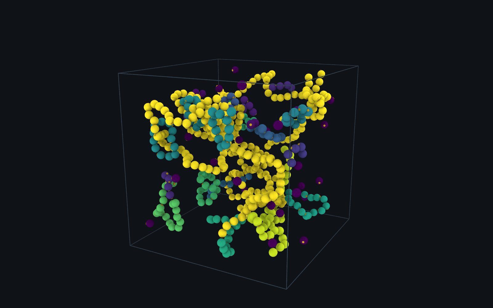
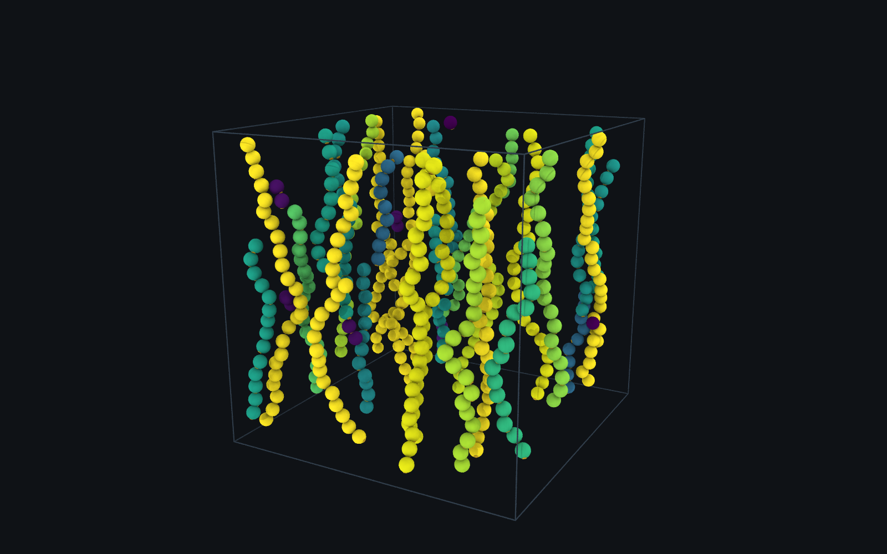
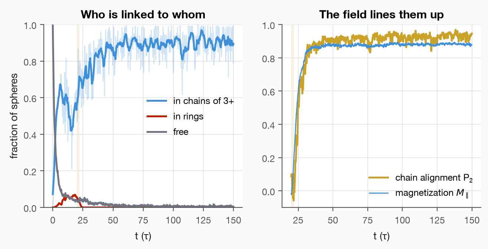

From soccer balls to ferrofluids
A 2021 homework rolled soccer balls across a field and asked whether any two would collide. Rebuilding it properly turned a counting exercise into physics: forces instead of overlaps, spheres that spin, magnetic dipoles that pull them into chains, and a test suite that checks every step against theory and published reference data.
Open the player →Chapter 1The toy
The original program was small and honest. Each ball is a 4.45-inch disk with a position and a velocity. Every time step it moves by x += v·dt, rolling resistance takes 1% of its speed per second, and a ball that rolls fully over a touchline stops where it is. Before each step the program checks every pair of balls; the first pair closer than two radii ends the game with "Collision occurred between ball i and ball j."
That design has one deep flaw, and it is the same flaw every naive simulation has: it only looks at the world at the sample times.
Chapter 2Balls that pass through each other
The course's own test cases expose it. Six balls start on one diagonal. With a time step of 0.01 s the program correctly reports that balls 2 and 3 collide after 7 steps. With a step of 1.234 s it reports balls 3 and 5; with 10 s steps and four more balls it reports no collision at all. Balls 2 and 3 are heading straight at each other at a combined 438 inches per second. They can't miss, but between two snapshots they simply swap places.

The fix is to stop sampling and solve. Every rolling ball slows at the same rate γ = −ln 0.99, so measured from any moment each ball sits at its start point plus its velocity times a common "distance budget"
Two balls touch when their separation reaches two radii, which is a quadratic in s. Its earliest root, written in a form that avoids cancellation, gives the exact contact time; exits over the touchlines and the moment a ball slows below 1 in/s are solved the same way. Event by event, the answer no longer depends on any time step: balls 2 and 3 meet at t = 0.06036266 s, in all three versions of the test. The rebuilt "legacy" mode still reproduces all five of the original outputs exactly, so the old answers and the corrected ones can be shown side by side.
Chapter 3From collisions to forces
Real particles never "detect" collisions. They push on each other continuously. In the new engine every interaction is a potential energy, and forces are its slope. Close contact is a steep but smooth repulsion (the Weeks–Chandler–Andersen form of Lennard-Jones), and motion is integrated with velocity Verlet, a symplectic scheme: its energy error stays bounded instead of drifting, and it shrinks with the square of the step.

Chapter 4Giving the balls a spin
Each sphere now has an orientation, stored as a unit quaternion, and an angular velocity. Anything that depends on orientation (today, a magnetic dipole fixed in the sphere) is handed to the physics as a vector in space. One identity then turns every energy into torques as well as forces:
The engine is written in PyTorch, so automatic differentiation computes ∂U/∂u and ∂U/∂r for every potential. Adding a new interaction means writing one energy function; tests confirm the forces and torques against finite differences to better than one part in a hundred million.
Chapter 5Spin you can see: billiards
Before the spins get magnetic, a detour back to the table the project started from, now with real balls. A pool ball struck by the cue slides: the cloth rubs at its contact point until the spin catches up with the speed, and from then on it rolls. Hit it low and it carries backspin (draw), high and it carries topspin (follow), off-center and it spins about the vertical (english). Sliding friction obeys one tidy law: the speed plus two-fifths of the spin's rim speed stays fixed until the ball rolls. Everything a pool player calls a rule follows from it.
The simulator keeps the soccer chapter's lesson: it never steps through time. Within each kind of motion a ball's position is a quadratic in time, so every collision, cushion hit and pocket drop is the exact root of a polynomial (a quartic for two balls). Balls cannot tunnel, and each collision is computed at the instant the balls touch.

Then the fun part. Could one stroke sink every ball? From a normal rack, essentially never. But the layout can be designed: a search with the simulator in the loop builds a domino chain in which the cue ball strikes ball 1, each ball knocks the next one on and peels off into a pocket, and the last ball drops too: six balls, six pockets. Each placement is found by scanning the cut angle with exact physics, spin and all, and taking the middle of the window that works; the whole layout counts only if the full simulation reproduces every planned contact.

Watch it in 3D: numbered balls rolling and spinning on the table, the cue ball's dots turning as it slides and grips, energy and slip plots, every contact in the event log. Open the trick shot →
Chapter 6Magnetism, measured
Two dimensionless numbers describe magnetic spheres in a warm bath. The coupling λ compares the attraction of two touching dipoles with thermal energy; the field strength α compares a dipole's energy in the field with thermal energy:
For independent dipoles, statistical mechanics predicts exactly how much they line up with a field: the Langevin function L(α) = coth α − 1/α. Thousands of simulated spinning dipoles, kept at temperature by rotational Langevin dynamics, land on that curve within statistical error at every field tested.


Chapter 7Chains
Turn the coupling up to λ = 6 and the spheres stop behaving independently. Head-to-tail contact is worth 12 kT, so dipoles snap together into wandering chains and closed rings even with no field at all. At t = 20 the field ramps on. Within a few time units the rings open, the chains swing into line, and nine in ten spheres end up in field-aligned chains averaging 15 spheres long. The magnetization overshoots what independent dipoles could manage (0.88 against 0.80), because the chains help each other along.



Watch it happen: the player shows every sphere's dipole as a cone and a marker on its surface turning as it spins. Color them by orientation, by alignment with the field, or by the length of the chain they belong to. Open the player →
EvidenceHow we know it's right
Every claim above is a test that runs on each change. Selected results (float64 on the CPU):
| Check | Requirement | Result |
|---|---|---|
| Forces and torques against finite differences | < 10⁻⁶ relative | 3.6 × 10⁻⁹ |
| NIST Lennard-Jones reference energies and virials (12 cases) | all 5 published digits | 12 / 12 |
| Energy error vs. time step (velocity Verlet) | ∝ dt² (ratio ≈ 4) | 3.90, 3.95 |
| Total angular momentum, orbital + spin, over 10⁴ steps | < 10⁻¹⁰ | 1.2 × 10⁻¹² |
| Run backwards to the start after 1000 steps | < 10⁻⁸ σ | 1.5 × 10⁻¹⁴ σ |
| Dipoles in a field vs. the Langevin function | within 3σ at 5 fields | ≤ 1.1σ |
| Translational vs. rotational temperature | both within 2% of target | 1.003, 1.001 |
| Soccer: original outputs; exact contact times | exact; 50-digit cross-check | 5 / 5; 10⁻¹² |
| Billiards: 5/7 rolling speed; 30° rule for a rolling cue ball | closed forms | 10⁻¹²; 10⁻⁹ ° |
| Billiards: contacts exact, no ball escapes (12 random breaks) | < 10⁻⁹ m | pass |
NextMolecules as graphs
The spheres are the first step. Next, atoms become nodes and bonds become edges of a graph, from which every bond angle, torsion and exclusion follows automatically: hydrogen, nitrogen, oxygen, carbon dioxide, water. After that come rigid multi-site molecules, Ewald sums for charges and dipoles in periodic boxes (checked against NIST's water reference energies), a live mode with sliders for field and temperature, and machine-learned potentials. The engine was built so each of these is a new energy term, not a rewrite.
Open the player →